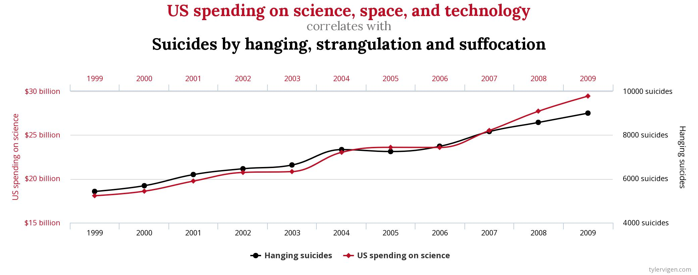

Correlation Does Not Imply Causation
- Mar 5 • 6 min read
- Key Terms: correlation, causation, scatter, python, pandas
The statement correlation does not imply causation is one of the most famous in the field of statistics. It's incredibly important to understand so we properly understand the relation between two variables of numeric data.
Correlation
Correlation is a measure of the relation of two numeric variables. For example, we'd expect a positive correlation between the temperature outside and ice cream sales at a shop. If it's hotter outside, we'd expect more people to buy ice cream. Ice cream sales likely positively correlate with increased temperature. There are exact numerical measures of correlation such as the Pearson correlation coefficient and the Spearman's rank correlation coefficient.
Causation
Causation indicates a relation between two variables in which one variable if affected by another. For example, there have been numerous studies that provide evidence that smoking causes lung cancer. A study, in statistical terms, is a detailed investigation and analysis of a situation. This post won't go into additional details of studies as they require lots of careful planning and implementation to perform successfully.
Correlation vs. Causation
Often times, people naively state a change in one variable causes a change in another variable. They may have evidence from real-world experiences that indicate a correlation between the two variables, but correlation does not imply causation! For example, more sleep will cause you to perform better at work. Or, more cardio will cause you to lose your belly fat. These statements could be factually correct. However, with these statements, we need evidence from a properly completed study to factually state there is a causaul relation between the two variables.
If someone states a potentially spurious casual statement like this, I'd encourage them to perform research on independent studies to gather official evidence. Studies are often done by research-driven institutions and universities. Here is a paper published by the Journal of Obesity that cites several studies that provide evidence that high-intensity intermittent exercise may be effective to cause people to lose abdominal body fat.
Tyler Vigen has an interesting page on his website that visualizes spurious correlations. Below is an example that shows a strong positive linear correlation with U.S. spending on science, space and technology with suicides by hanging, strangulation and suffocation.

However, do you think U.S. spending in this field causes hanging suicides? My hypothesis is that there's no evidence to support a causal relationship between these two variables.
While this example from Tyler's website seems extreme, it's poking fun at how people can immediately visualize a relationship between two numerical variables and naively jump to the conclusion that there's a causal relationship.
Lastly, I want to show a funny comic from the comic website XKCD about correlation and causation.
"

The joke is that the guy on the right feels he doesn't have strong evidence (such as through a study) to prove his statistics class caused him to believe that fact is true.
Additional Misconceptions on Correlation vs. Causation
A mediator variable is a variable that explains the relationship between independent and dependent variables. For example, we may notice a positive correlation with increased ice cream shop sales with increased heat. However, a potential mediator variable could be the count of people sweating. It's possible an increase in the count of people sweating in the local area influences ice cream sales. If this were true, you may want to open an ice cream store near a sauna rather than simply in a hot weather area.
To make a causal relationship, we need to rule out lurking variables. These are variables that are not included in the independent or dependent variable but can affect the relationship between the two. The definition of the mediator variable above is considered a lurking variable too. This idea of a third variable is another name for a potential third variable that affects the causal relationship between the independent and dependent variables.
Another example is that a soccer coach (naively) noticed that players who practiced additionally after games caused them to love soccer more. However, we don't know if the players playing more came before their love of soccer. Perhaps those players loved the game of soccer before the season started and that could have caused them to want to practice more after games. In this situation, there's ambiguous temporal precedence - the unknown of which variable came first for inferring causality.
Another example is a supplements company claimed that people who drink their pre-workout shake directly before their workout complete approximately 2 more reps for each exercise and therefore have a better workout. The company claimed their pre-workout shake caused increased workout reps. This is considered a post hoc fallacy - an action taken before another action doesn't mean it directly caused the next action.